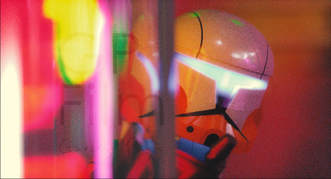

Squad 42: The Return
Today marks the 11th anniversary of the first video in the Squad 42 saga, which at the time of its release was a massive hit in the Lego Star Wars Brickfilm community. This is the story of the history and the future of the Squad 42 saga.
3/20/18
About 10 years ago, before I ever got into making MOC's, I wanted to make Brickfilms. I actually tried, but subsequently failed. This was due to a number of factors, one of them being I had no understanding of how lighting and cameras work. Another being the fact that I was twelve and simply wasn't mentally equipped to plan the creation of a stop motion video that met the standard. A standard that was set by a personal hero of mine at the time: Gareth Pugh aka Spugesdu. He made a series of stop motion videos titled 'Squad 42', following a squad of clone commando's. The series featured an increasingly high level of editing. The first video, looking back, is quite silly, with floating text instead of voice lines and pretty jarring use of music in a few places. In the second video the floating text was replaced with high pitched modulated voice lines. These first few videos all currently sit between 900k and 1,7M views, while his channel sits at a mere 19k subs. His next entry into the saga, Squad 42 IV: No Alternative, which currently has 2,6M views, is where you could say the fun really begins. The lighting becomes a lot more consistent, the voices are modulated in a way that isn't completely silly but effectively hides the fact that all the voice lines are done by the same guy. The effects improve massively, with blaster bolts and explosions all around. The sets also look a lot better, and the characters of Squad 42 receive a redesign.
Then came the video I must have watched over 50 times as a kid: Episode V: Alone in the Dark. It consisted of two videos, both longer than 6 minutes, making them the longest two videos in the saga. These videos both have over 1M views, and were sponsored by CAC. They heavily relied on animation besides stop motion and made use of characters like Cody and Deviss. An Episode VI was long teased, but never came out. Several small animation clips were posted, since the idea of what the video would be changed over time and these clips became obsolete. The brickfilm was in on-and-off production from 2009 through 2012, when it was officially cancelled and all the footage was posted in its unfinished state. The quality was again far beyond his previous work, with fully animated Lego spacecraft crashing into each other and beautiful stop motion. Since then there hasn't been much activity on the channel until about a year ago, when a remaster of the original three episodes was released. Then, in late 2018, Gareth announced he had restarted production of Episode VI, which he says will come out in the first half of 2018. I reached out to him for some details on Episode VI. He shed some light on how S42 got started and what can be expected of the next installment in the saga, along with a few exclusive teaser images.
"When I made the first Squad 42 I never had any plans to make sequels, let alone a sequel 11 years later…initially it was just a desire to use my cool rare Phase 1 Clone Troopers from the Attack of the Clones Lego Gunship set! But I loved making them, and seeing the positive responses online over the years (even while I was taking a long break from YouTube) has always been heartwarming and inspiring. After I failed to finish a part 6 in 2012 It’s always bugged me that I had unfinished business.
I hope people will enjoy what I’m cooking up for Squad 42 VI. I like to think that it’s an amalgamation of my last 6 years working professionally as a filmmaker, but I’ve tried so hard to capture the spirit of the originals. The new one is 100% CGI, which I guess is something you don’t see much of in Brickfilms. My goal is to make people forget within the first minute they’re watching that they’re not watching. If I manage to get even a few people to feel like that I’ll be happy. Even if nobody watches S42VI I’m still so proud of it and I can’t wait to show it to the world. It should be ready before the summer."
I am incredibly excited to see what other amazing visuals he is cooking up. While I personally found more of a calling in MOC's and getting that one really good photo, these brickfilms will always make me nostalgic for my early teens. Since he hasn't uploaded a new episode in the saga about 10 years, the video will probably not get the viral attention it deserves. That's why everyone reading this who enjoys Lego or Star Wars (otherwise, what are you doing here?) should go over to his channel and subscribe to him. And when the episode comes out, share it with anyone you think will enjoy it. I know I will.